单词列表预览
| 单词 | 音标 | 释义 | 操作 |
|---|
apple
/ˈæpl/
苹果；苹果树
I eat an apple every day.
apple
/ˈæpl/
太棒了！
💡 如何记忆
正在生成记忆方法...
恭喜完成学习！
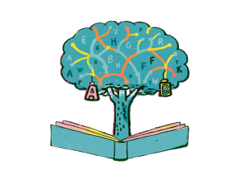
阅读联想记忆
根据收藏的单词生成趣味故事，在阅读中记忆单词
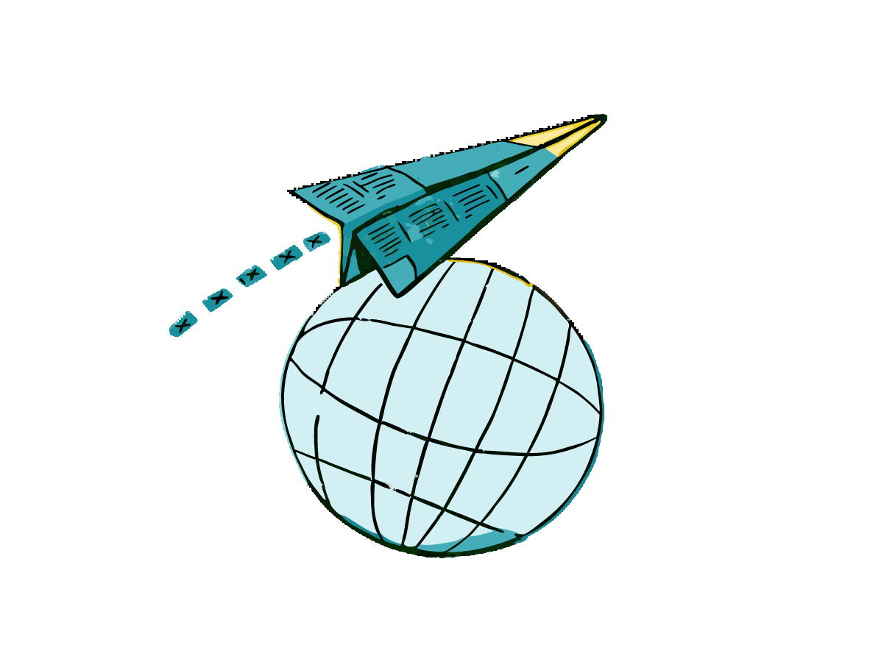
外刊阅读
上传外刊电子书，借助局部翻译来阅读
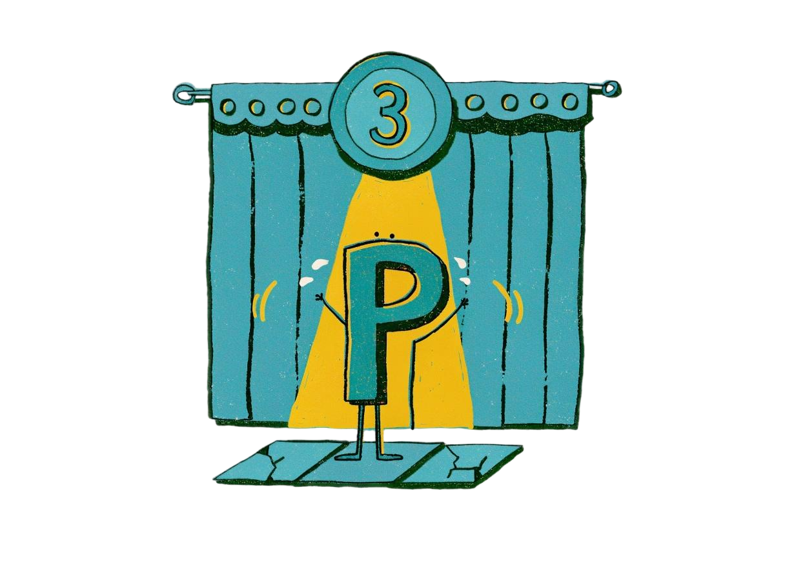
文字游戏
与AI对话式扮演主角，进行沉浸式文字游戏（恐怖/科幻/恋爱）
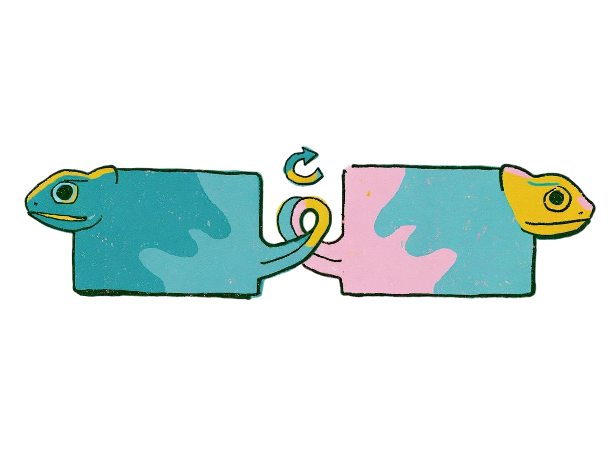
同义替换练习
从混合选项中选出正确的同义词，每题包含3个干扰项
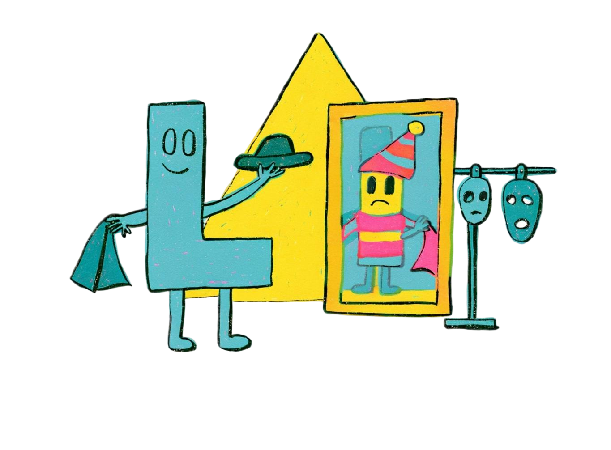
熟词僻义练习
根据单词和例句，从多个释义中选出正确的一项，提升对熟词僻义的掌握
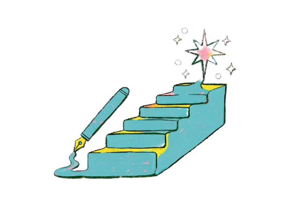
CEFR写作
输入或让AI生成英文段落，实时高亮CEFR词汇等级颜色
英文原著榜
拉取古登堡计划英文原著榜，并生成可执行的阅读方法
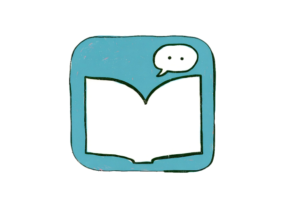
微信读书划线导出
连接微信读书skill，导出个人划线与想法，或提取单词为词书
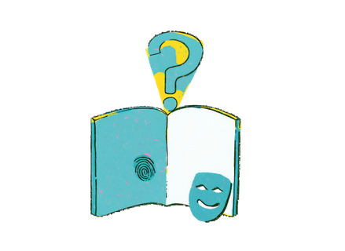
英文剧本杀
多人角色扮演剧情，用英文推进对话与推理
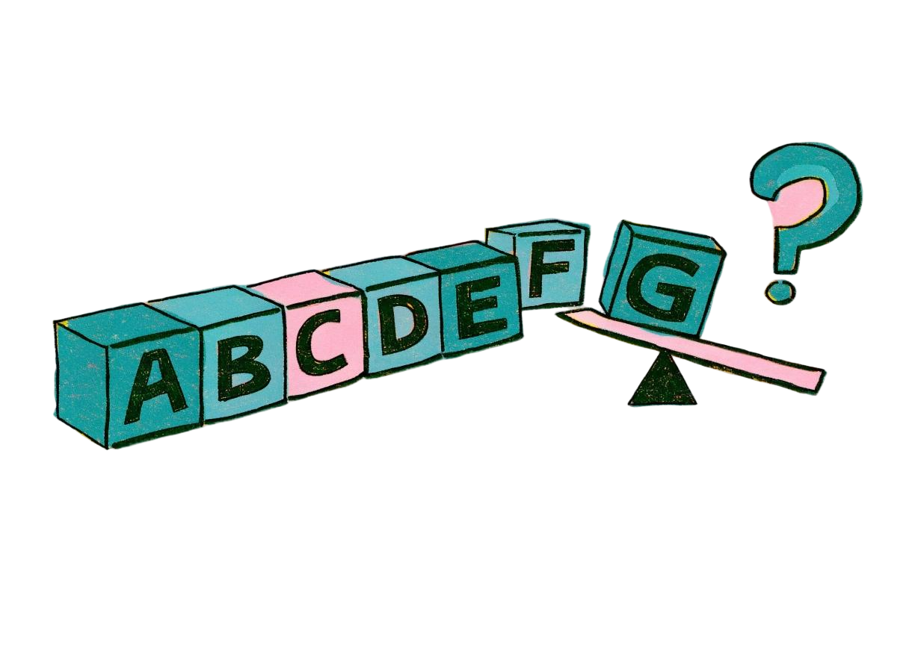
英文接龙
与AI轮流接龙单词或句子，考验词汇储备
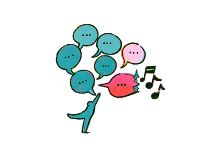
口语角话题
搜索指定日期的热点榜单，AI生成英语角讨论题与高分表达
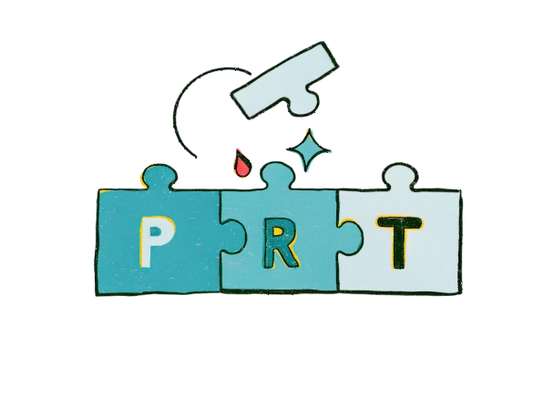
词根词缀拆解
拆解构词成分，成串记忆同源词汇
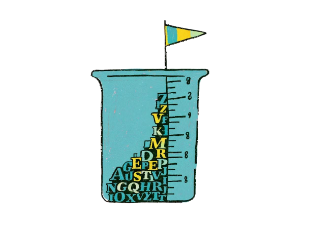
词汇量测试
快速估算词汇量，追踪长期增长曲线
阅读联想记忆
根据收藏的单词生成阅读考题，在阅读中记忆单词
📚 本文生词
0 个单词📝 阅读理解练习
根据上面的故事，完成以下题目
太棒了！
得分：0 / 0
CEFR写作
输入或让AI生成英文段落，实时高亮CEFR词汇等级颜色
使用教程：在下方编辑区写下英文段落（或点「AI生成」取题），系统会实时按 CEFR 等级给每个单词着色。顶部徽章显示各级别词数与预估等级，点徽章可聚焦该级别，点 Beg./Int./Adv. 可按范围筛选；「AI设置」里可调目标等级、文体与实时纠正。
关于 CEFR ：欧洲语言共同参考框架(Common European Framework Reference)把语言能力划为 A1–C2 六级。本应用的单词等级主要来自 Cambridge CEFR 词表，极个别单词的不同释义可能存在不同CEFR等级，所以本实例为便于实时渲染采用了官方分级标注每个词的平均难度，仅供参考。
应用致敬：本应用的分级着色思路致敬已于2023年关站的 Duolingo CEFR Test —— 它曾以同样的方式，让学习者直观看见自己的词汇水平。
0 word tokens
文字游戏
通过对话扮演主角，与AI旁白互动展开趣味剧情
Text Game
同义替换练习
从混合选项中选出正确的同义词/替换词（每题3个干扰项），提升词汇替换能力
trait
/treɪt/
请从下方选择同义替换词 （0/?个）
完全正确！
练习完成！
📄 词单名称
共 0 个单词
| 序号 | 单词 | 音标 | 释义 | 同义词 |
|---|
口语角话题
选择日期搜索热点榜单，按热度排名挑选话题，再由 AI 生成英语角讨论题、高分表达与追问方向
英文原著榜
拉取古登堡计划（Gutenberg）英文原著榜（按下载量排序），挑一本原著，查看微信读书大众热门划线并让 AI 给出阅读方法
微信读书划线导出
连接你的微信读书账号，从「我的笔记」中选定一本书，把个人划线与想法按章节顺序穿插导出为 Markdown / CSV
熟词僻义练习
根据单词、音标和英文例句，从多个释义中选出正确的一项（每题3个干扰项），提升对熟词僻义的掌握
spring
/sprɪŋ/
请选择在例句中的正确释义
📝 例句
The mattress has lost its spring and feels flat now.
回答正确！
练习完成！
📄 词单名称
共 0 个单词
| 序号 | 单词 | 音标 | 释义 | 例句 |
|---|
📖 词书名称
共 0 个单词
| 编辑 | 序号 | 单词 | 音标 | 释义 | 例句 |
场景类别
显示层级：
|
形近词 |
|---|
学习数据
历史趋势
艾宾浩斯复习
SM-2 智能安排记忆星图
每个词一个标签 · X=错误率 Y=练习次数 字号=复习间隔 颜色=掌握度近30天学习趋势
顽固错词 TOP 10
正在解析文档...